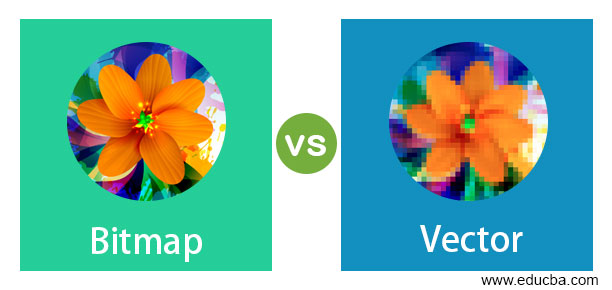

Bitmap betekent letterlijk: een plaatje dat uit bits is opgebouwd. Een van de manieren waarop een grafische afbeelding op een schijf bewaard kan worden, is door de tekening punt voor punt te beschrijven. Dat is mogelijk omdat een tekening zowel op het scherm als in druk uit puntjes is opgebouwd. Zo'n puntje heet een pixel (een samentrekking van picture element). Van elke pixel wordt de kleur beschreven in een aantal bits; hoe meer bits, des te meer kleur(nuances) er mogelijk zijn. Een zwartwit-plaatje heeft aan één bit per pixel genoeg, met 16 miljoen kleuren zijn er 24 bits per pixel nodig. Het aantal bits per pixel wordt ook wel kleurdiepte genoemd. Een bitmap is daarmee een afbeelding die bestaat uit een rechthoekig raster van vierkantjes. Elke pixel bevat informatie die beschrijft of de pixel zwart of wit is, of dat de pixel een kleurwaarde heeft.
Een vector wordt in meetkunde en natuurkunde gebruikt om natuurkundige grootheid dat zowel grootte als richting heeft te vertegenwoordigen.
Wat is een vector? Een vector wordt in geometrie en fysica gebruikt om fysische grootheden aan te geven die richting en grootheid hebben. Denk aan snelheid, verplaatsing,versnelling en kracht. In deze video leer je de notatie van vectoren, optellen van vectoren en vermenigvuldiging met een scalar.
